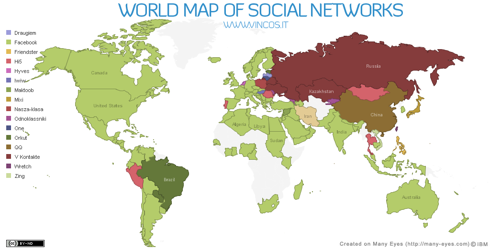
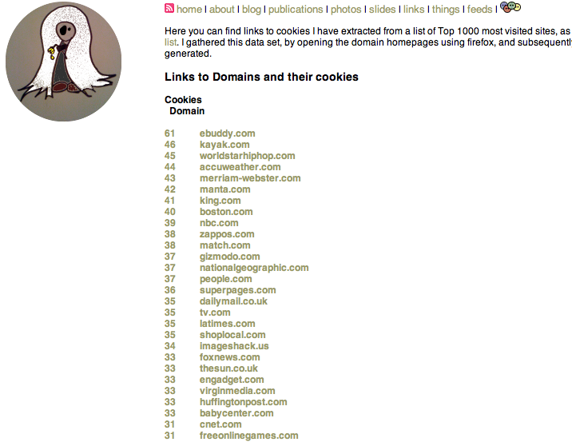

Topics
- Privacy
- The Walled Gardens
-
- The Government Data Initiatives
- Do They know more about You than You?
- Your Browser and Tracking
- What Service Providers can do to Help
Privacy
- List of couple of definitions
- Privacy not Security
- Security is about keeping prying eyes out of your network
- Privacy is about avoiding your valuable data from leaving your network
- Dictionary: The state or condition of being free from being observed or disturbed by other people
- Technology is impacting our privacy and our society from a number of angles
Knowledge is (Potential) Power

Knowledge may be power, but this knowledge is distributed throughout social networks of people. Without ways of building the Social Web into a first-class citizen of the Web, we will never be able to "program the social computer" to solve large-scale social problems.

After the W3C Workshop on the Future of Social Networking in Barcelona, for over a year the Social Web Incubator Group has been meeting on a weekly basis to overview the space and craft a strategy for the W3C.
The results are grim...
It's no longer the wild west...

Facebook is taking over

dominating ...

In 2009 timbl said "Let's Webize the Unix FileSystem"
2011 ... Not all bad news

- Federated Social Web
- Diaspora
- Status.Net
- SMOB Project DERI
- Data Dumping capabilities
- Google's Dashboard
- Google's DataLiberation Front
- Facebook's backup facility, post f8's OGP launch
So what?
- Your privacy is under threat because data about YOU no longer BELONGS TO YOU
- See Bruce Schneier getting kicked out Facebook
- What happens to your data when you die, who owns the data then?
- Companies which sell "Memory Boxes"
- See Last.fm's take on this
- Your privacy is subject to the actions of others - Personal Identifiable Information (PII) Leakage
- But this was obvious right? about social networking sites, which are walled gardens
Great Government Work
- Lots of activity opening up data
- Government all across the world, UK, US, Netherlands, etc
- Release of schools information, transport, boundary, and crime data to name a few in the UK
- Fits in current push for the 'Big Society'
- They are even outputting RDF (A big phat smilie face)
Crime Maps
Public Sector Mash ups EnAKTing Project
Public Sector Mash ups EnAKTing Project
School Map App data.gov.uk
All this is great! But ...
- Issues around the anonymisation of data
- Which is impacting what Data is to be released
- But there are other issues
Dark Side - Map
Dark Side - Pictures

Dark Side - Alerts
What will this lead to?

Why Government Data?
- Transparency in the Digital Age
- Which is only supported because of plan to build a 'Big Society'
- Which I fear has bite the UK government already
- One of the goal being to get people to distribute knowledge within society themselves...
So who do they ask to come in an help?
My guess is ...
- I can't imagine they had any grasp of privacy whatsoever
And from my POV they GOT it wrong
And now these Walled Gardens are following you all over the web!
Can anyone tell me what is wrong with this picture?
This is ...
Not logged in?
- You don't have to be logged in to be tracked
- You don't have to have a tab open in your browser
- And no, you don't even need to have ever signed up for an account
- So, how many of you guys knew that?
Hats off to these Social Networking Sites
- One would usually get paid to host tracking software, not anymore!
- Some of the technology is awesome though, and perhaps the service is worth a bit of your
privacy
- But some of it is a waste of space
- List of icons with links?
- Analytics?
- Shortening services?!?
So I ran a little test last week at Rewired State
Why should the private media analysis company imrworldwide.com know when people are turning up to jobcentreplus.org?
How much tracking goes on ?
They aren't everywhere, or are they?
Balachander Krishnamurthy from AT&T Labs–Research
Links to Bala's work re: coverage
Hidden Nodes in 68 countries
Monopolisation of Ad Networks - Or your personal information
Degree of availability of Personally Identifiable Information
Direct leakage of hi5's privacy policy
Wall Street Journal Stats
Wall Street Journal ToolBar
My stats from a few months ago
Which got blown away by the WSJ work ;)

Issues
- OPT-OUT via OPT-IN
- Set a flag in your browsing, stating that you don't want any
-
- block 3rd party cookies, only browser to do this is current the Safari browser
- Massive distinct between 1st and 3rd party cookies
- Browser Fingerprinting
- EFF style browser fingerprinting
- Browsers could mask this
- Integration of Flash Cookies
- Make sure browsers unify cookie control/config
- Will spot respawing
- Study looking at Flash Cookie respawning in popular porn sites
- Personal information leakage through referrer links
- Services could make sure that their uris don't hold any personal information
- Which definitely doesn't sound like a "cool uri"
- Proxy facilities
Relevant Technologies
- Cookies
- Headers
- Flash Cookies
- HTML5, Evercookie, with the local object store
Standards work in this space
- The IETF released a note Overview of the Universal OPT-OUT
- Which proposed a few possible techniques
- Domain/Request Blocking
- Who will author the list, maintenance,...
- DO NOT TRACK COOKIES
- Issues re: blowing away, and flash cookies
- DO HTTP Header
- Will require social/community and goodwill
- DOM Object
- Will require social/community and goodwill
What Service Providers can do to Help
Put HTTPS only on their login pages
Focus on security
NO more plain text passwords
Proxy out Referrer headers
Stop putting in any personally identifiable information in URIs
Treat Users which don't want to be tracked accordingly